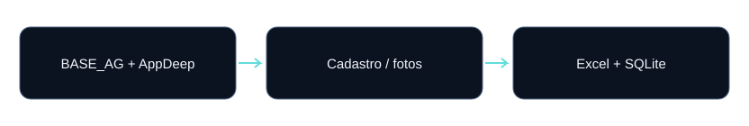

Consolidação cadastral
ETL de Água
Integração de BASE_AG e AppDeep com fallback de campos e rastreabilidade da origem do status.
O problema
BASE_AG e exportações AppDeep contêm cadastros sobrepostos, dados ausentes e formas distintas de representar visitas. O resultado precisa reunir informações sem aplicar uma regra de contagem inadequada.
Contribuição demonstrada
Implementação do fluxo em Python, definição das regras descritas, organização das saídas e disponibilização de documentação e testes. A versão pública oferece amostras fictícias para reprodução.
Fontes e arquitetura
Um Excel com BASE_AG no nome e outro com EXPORTACAO. Os dados cadastrais usam a primeira aba; nomes de colunas são validados literalmente.

- Validar colunas e preparar matrículas e datas.
- Selecionar um registro por matrícula dentro de cada fonte.
- Escolher a fonte vencedora e aplicar fallback nos campos definidos.
- Reunir links de fotos, exportar Excel/SQLite e registrar auditoria.
Decisões de engenharia
| Decisão | Comportamento implementado |
|---|---|
| Prioridade | A data mais recente vence; AppDeep prevalece em empate entre fontes. |
| Campos ausentes | Endereço, bairro, status, nome e telefone podem buscar o valor correspondente na outra fonte. |
| Visitas | Quando BASE_AG existe, usar Qtd. Tentat. dessa fonte. Para matrícula exclusiva do AppDeep, contar ocorrências. Não somar as fontes. |
| Fotos | Reunir hyperlinks BASE_AG e URLs AppDeep, remover repetição de matrícula + URL e distribuir fotos em colunas. |
Resultado reproduzível
Amostra inteiramente fictícia. Estes números demonstram comportamento funcional; não são métricas de produção ou benchmark de escala.
| Verificação | Resultado da amostra |
|---|---|
| agua | 3 matrículas |
| fotos | 2 linhas |
| DEM1001 | 2 visitas |
| DEM1002 / DEM1003 | 1 / 2 visitas |
Como foi validado
Um teste de integração gera os arquivos fictícios, executa o pipeline em pasta temporária e confere contagens, visitas e integridade do SQLite. Isso não equivale a cobertura completa de todas as regras.
Referência: validação de 13/10/2026. Consulte o README para execução e o GitHub Actions para o status mais recente.
Limitações e próximos passos
A cópia pública possui configuração independente. O fluxo ainda substitui tabelas diretamente, sem promoção conjunta de Excel/SQLite. A padronização de caixa da matrícula ocorre na saída; diferenças entre identificadores na entrada exigem atenção.
Uma evolução deve ser implementada e testada antes de ser apresentada como funcionalidade concluída.